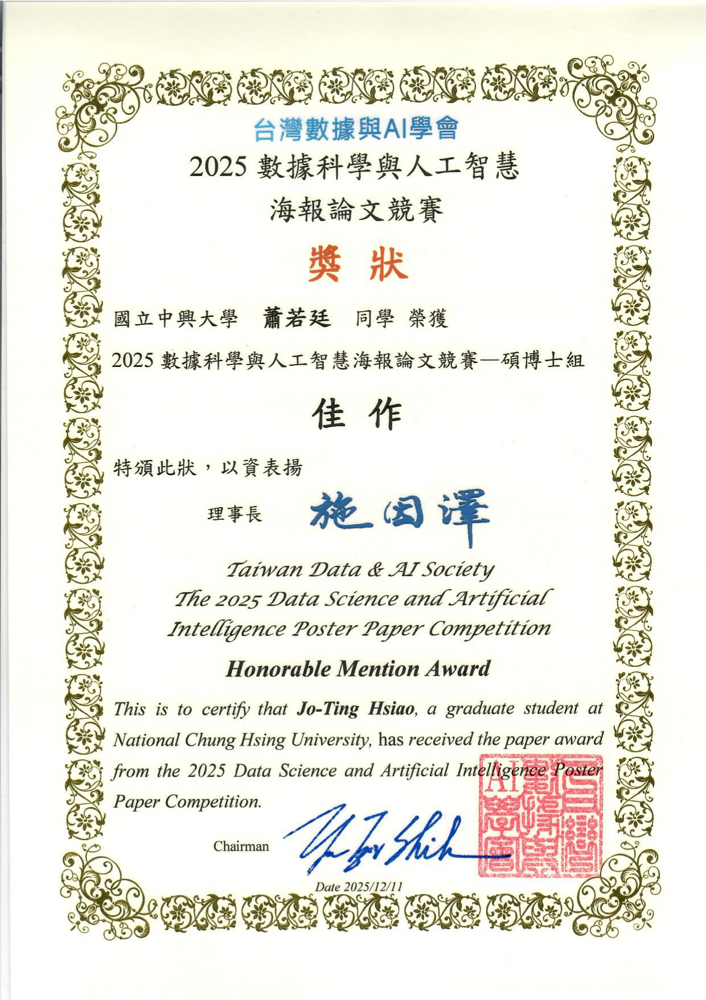
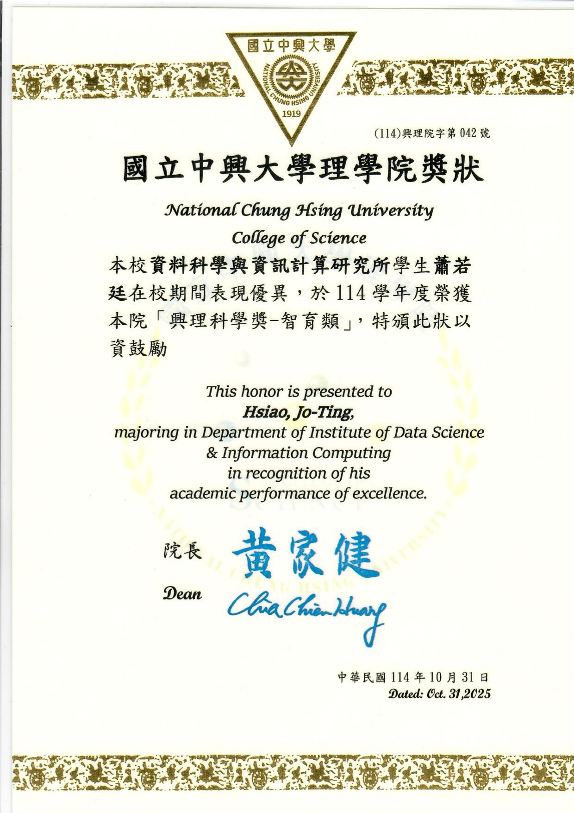
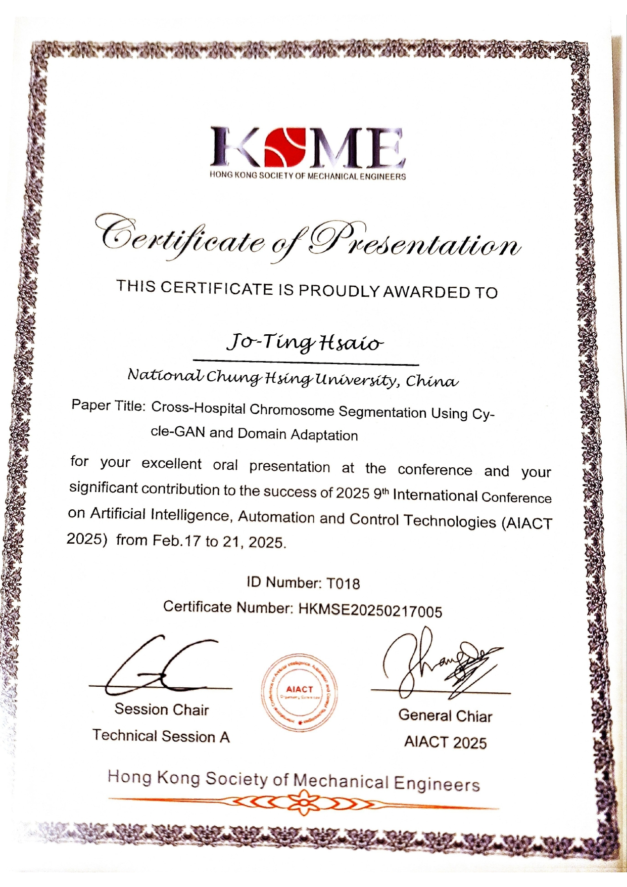
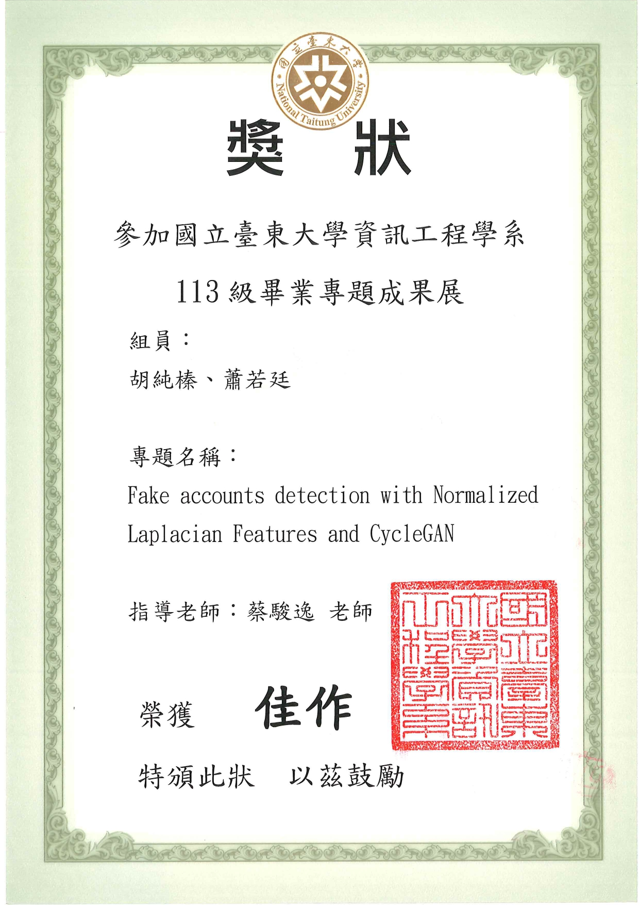
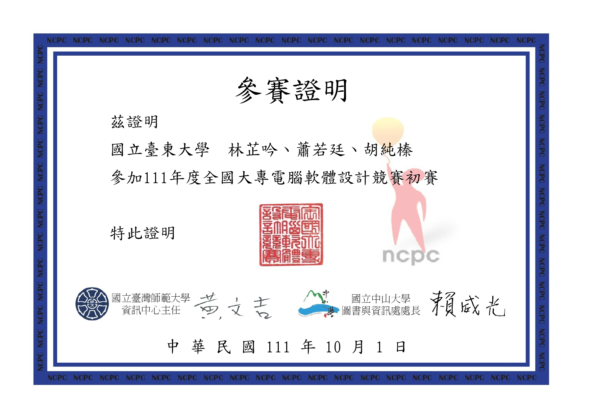
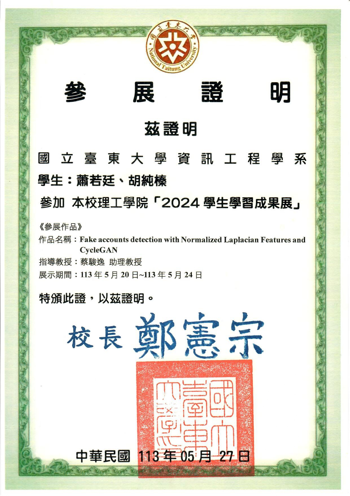
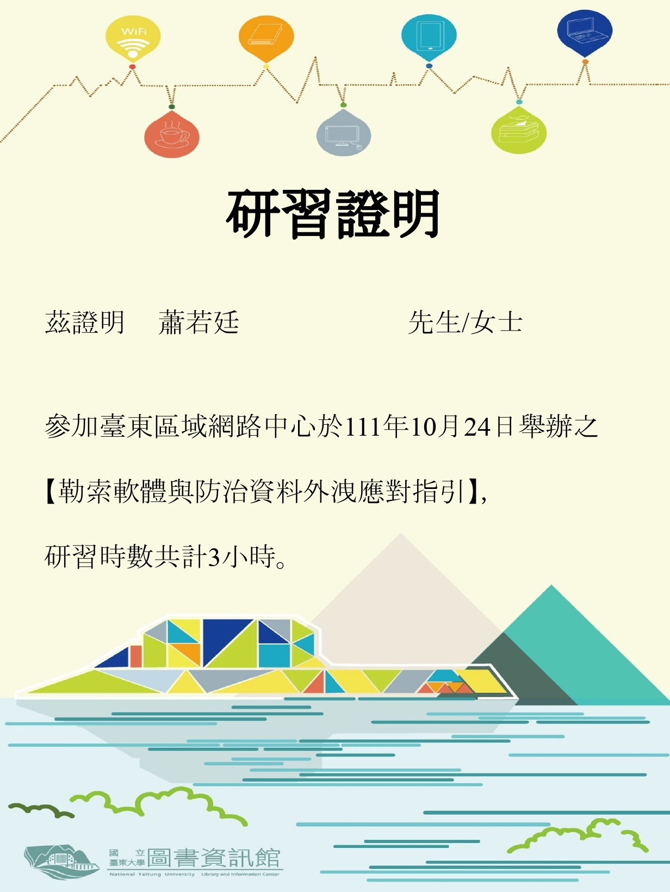
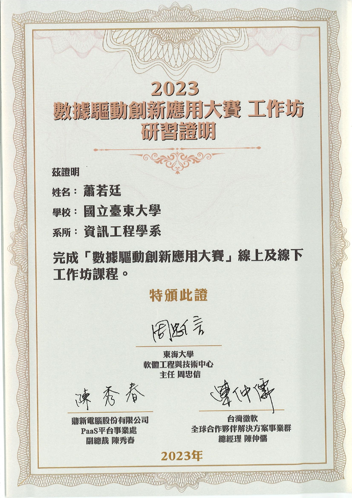

Skills
AI / Machine Learning
DevOps / Systems
Projects
Work Experience
2024-09 – 2025-06
計畫助理（工時人員）
台中榮總醫院 — 婦女醫學部
- 參與國科會計畫：「基於領域適應技術的自動染色體核形圖分析系統與其跨院驗證結果之分析」（NSTC 113-2221-E-075A-007）
- 協助處理染色體影像數據，針對自動化核形圖分析系統進行臨床驗證與優化
- 運用 Domain Adaptation 與深度學習模型，提升系統在跨院影像數據上的精準度
- 協助進行染色體核形圖分析系統的跨院驗證（Cross-institutional Validation）
- 與婦女醫學部醫師交流，將臨床需求轉化為自動化分析系統的功能規格
2021-09 – 2024-06
工時人員
國立台東大學 — 資訊網路組
- 負責校內電腦硬體設備的故障診斷，包含主機零件檢修與更換
- 執行作業系統重灌（Windows）、軟體環境配置及驅動程式安裝
- 協助排除區域網路（LAN）連線問題，進行網路孔位測試與基本網路架構檢核
- 提供使用者硬體操作諮詢與緊急技術問題排解
Education
預計 2026-07 畢業
資料科學與資訊計算研究所 碩士
國立中興大學 ｜ GPA 3.94 / 4.3 ｜ 指導教授：郭至恩
- 碩論研究方向：自動化染色體分割、校正（拉直）與核型分析
- 擔任課程助教：大數據結構化程式設計、資訊程式原理、微積分 Python 設計、數值最佳化
- 產學合作：AOI 瑕疵自動化分類專案（工研院 AIDEA 平台），達到 99.2% 辨識準確度
AIACT 2025 論文發表
研究生獎學金 第四名
AI 海報競賽 佳作
興理科學獎 智育類
2024-06
資訊工程學系 學士
國立台東大學 ｜ GPA 3.88 / 4.3 ｜ 指導教授：蔡駿逸
- 畢業專題：Fake Accounts Detection with Normalized Laplacian Features and CycleGAN
獎項
專題佳作獎
圖書館工讀貢獻獎 110–112
圖書館愛館獎 112
證明
NCPC 程式競賽參賽
2024 學生學習成果展
數據驅動創意應用大賽
資安工作坊 (1)
資安工作坊 (2)
Research & Accomplishments
- [AIACT 2025] Cross-Hospital Chromosome Segmentation Using CycleGAN and Domain Adaptation — 國際研討會論文發表
- AIDEA 平台 AOI 瑕疵自動分類專案 — 辨識準確度 99.2%
- 研究生獎學金 第四名
- 2025 數據科學與人工智慧海報論文競賽（碩博士組）— 佳作
- 114 學年度「興理科學獎 — 智育類」
獎項證明
碩士

數據科學與人工智慧
海報論文競賽 佳作
海報論文競賽 佳作

114 學年度
興理科學獎 智育類
興理科學獎 智育類

AIACT 2025
國際研討會論文發表
國際研討會論文發表
大學

專題佳作獎

NCPC
程式競賽參賽
程式競賽參賽

2024 學生
學習成果展
學習成果展
資安工作坊 (1)

資安工作坊 (2)

數據驅動
創意應用大賽
創意應用大賽
Languages
中文
English